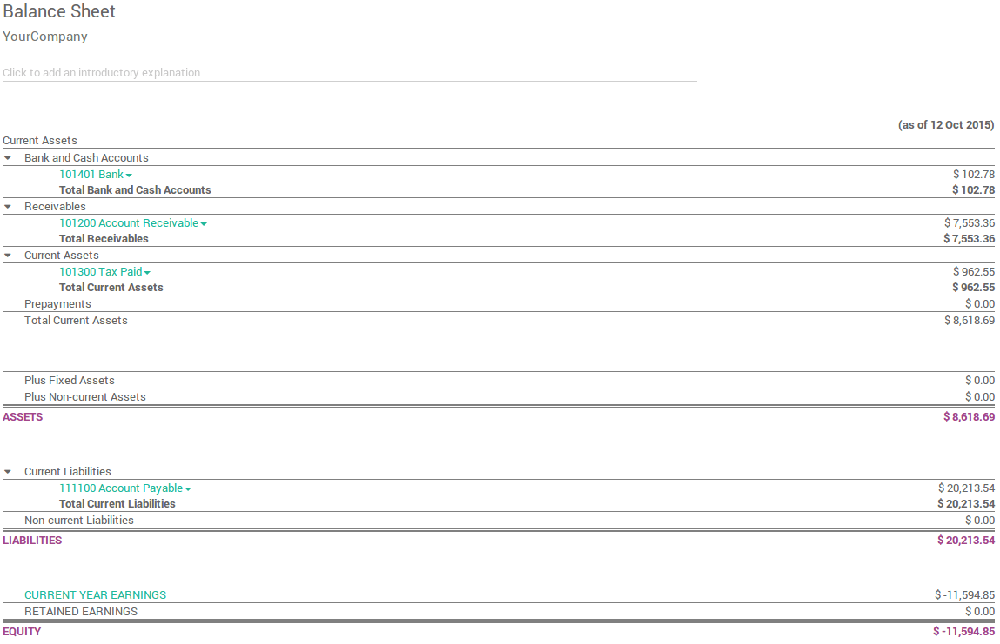
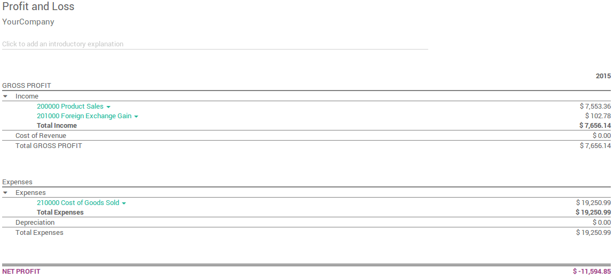
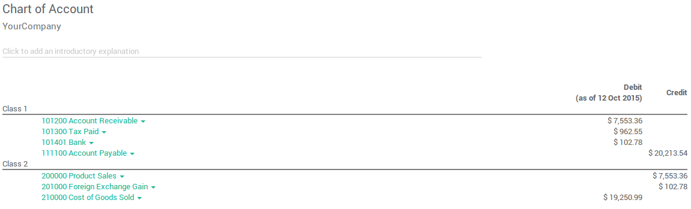
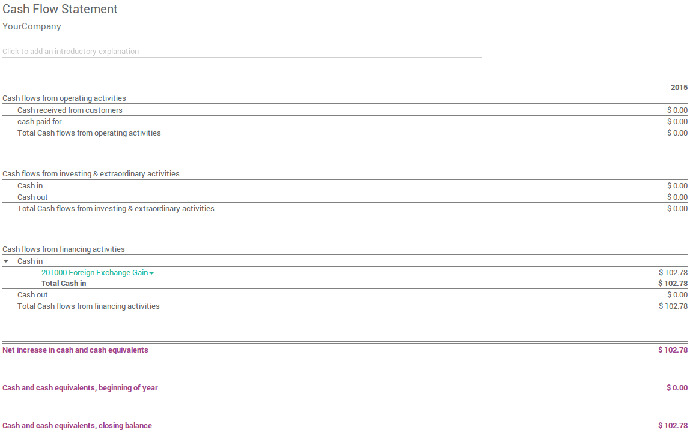

Besides the reports created specifically in each localisation module, a few very useful generic and dynamic reports are available for all countries :
[UNKNOWN NODE problematic]余额表 **
损益
科目表
经营综合报告
总账
应付账龄
应收账龄
现金流量报表
税表
银行调节
You can annotate every reports to print them and report to your adviser. Export to xls to manage extra analysis. Drill down in the reports to see more details (payments, invoices, journal items, etc.).
You can also compare values with another period. Choose how many periods you want to compare the chosen time period with. You can choose up to 12 periods back from the date of the report if you don't want to use the default Previous 1 Period option.
资产负债表
The Balance Sheet shows a snapshot of the assets, liabilities and equity of your organisation as at a particular date.
损益表
The Profit and Loss report (or Income Statement) shows your organisation's net income, by deducting expenses from revenue for the report period.
科目表
A listing of all your accounts grouped by class.
经营综合报告
The Executive Summary allows for a quick look at all the important figures you need to run your company.
In very basic terms, this is what each of the items in this section is reporting :
- 绩效:
- 毛利润：
- The contribution each individual sale made by your business less any direct costs needed to make those sales (things like labour, materials, etc).
- 净利润：
- The contribution each individual sale made by your business less any direct costs needed to make those sales, as well as any fixed overheads your company has (things like rent, electricity, taxes you need to pay as a result of those sales).
- 投资回报率(每年)：
- The ratio of net profit made, to the amount of assets the company used to make those profits.
- 位置:
- 平均债务人天数：
- The average number of days it takes your customers to pay you (fully), across all your customer invoices.
- 平均债权人天数：
- The average number of days it takes you to pay your suppliers (fully) across all your bills.
- 短期现金预测：
- How much cash is expected in or out of your organisation in the next month i.e. balance of your Sales account for the month less the balance of your Purchases account for the month.
- 流动资产负债：
- Also referred to as current ratio, this is the ratio of current assets (assets that could be turned into cash within a year) to the current liabilities (liabilities which will be due in the next year). This is typically used as as a measure of a company's ability to service its debt.
总账
The General Ledger Report shows all transactions from all accounts for a chosen date range. The initial summary report shows the totals for each account and from there you can view a detailed transaction report or any exceptions. This report is useful for checking every transaction that occurred during a certain period of time.

到期的应付款
Run the Aged Payable Details report to display information on individual bills, credit notes and overpayments owed by you, and how long these have gone unpaid.

到期的应收款
The Aged Receivables report shows the sales invoices that were awaiting payment during a selected month and several months prior.

现金流报告
The Cash Flow Statement shows how changes in balance sheet accounts and income affect cash and cash equivalents, and breaks the analysis down to operating, investing and financing activities.
税务报告
This report allows you to see the net and tax amounts for all the taxes grouped by type (sale/purchase).